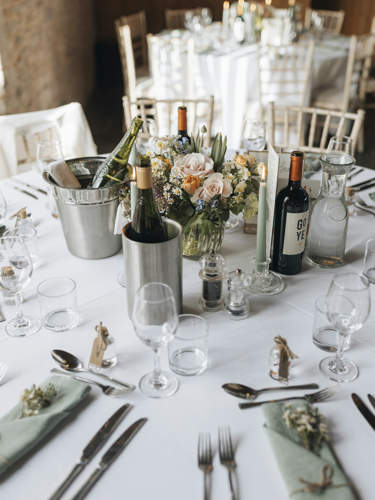

03 / The timing
A wedding timeline
with time for your guests.
Plan portraits around the ceremony, daylight, and the time you want to spend with your guests.
Alex Claudio Photography / Planning notes
Decide how much of the reception you want to spend with your guests before you fill the afternoon with portraits.
If you want to attend cocktail hour, put that time on the schedule. If you want to see each other for the first time at the ceremony, allow time for portraits together afterward.
Your photographer can plan the pictures with you. Your planner or coordinator needs to fit them alongside transport, catering, and the ceremony, then share one agreed schedule with the team.
Part 1 of 2
Make the decisions before adding times
Start with what cannot move
Write down venue access, the ceremony time and length, meal service, transport departures, and the end of photography coverage. Add religious or cultural events, outfit changes, and family commitments.
Check daylight for your date and location using the U.S. Naval Observatory’s sun and twilight times, with the correct daylight-saving setting. Ask your photographer how trees, buildings, indoor light, and the forecast affect your portrait options.
Sunset time alone cannot tell you when direct light leaves a courtyard. Check the venue before committing to outdoor portraits after the ceremony, especially if your sample schedule comes from another season.
Choose when to see each other
A first look means seeing each other before the ceremony. It lets you take some or all portraits together, with the wedding party, and with family earlier, depending on who is ready and available.
That means finishing preparations earlier too. Check with the people helping you get ready, and give everyone needed for group photographs their arrival time.
If you prefer to wait until the ceremony, you can still take individual portraits and some separate family photographs beforehand. Reserve time afterward for the pictures that need both of you. Decide how much of cocktail hour you are comfortable missing.
Write the family list with names
List everyone in each photograph by name. “Both of us with our parents” can leave questions when family relationships are complex.
Tell your photographer privately about sensitivities, mobility needs, or combinations you want to avoid. Nobody should have to explain a difficult family situation in front of a waiting group.
Ask someone who knows the family to gather the next group. Give participants a time and meeting place before the wedding, then have your photographer estimate the time needed from the finished list.
Part 2 of 2
Build a schedule you can follow
An example with a 4 p.m. ceremony
This eight-hour example runs from 1–9 p.m. It assumes one venue, a first look, a small family list, a 30-minute ceremony, suitable afternoon light, and no off-site travel. Hair and makeup finish in time for dressing and portraits.
| Time | Plan |
|---|---|
| 1:00-1:45 p.m. | Final preparations, getting dressed, and selected personal details. |
| 1:45-2:00 p.m. | Readiness check and move to the first-look location. |
| 2:00-2:35 p.m. | First look and portraits together. |
| 2:35-3:00 p.m. | Wedding-party portraits, if you have a wedding party. |
| 3:00-3:25 p.m. | Family portraits from the agreed list. |
| 3:25-4:00 p.m. | A break for you; ceremony preparations and guest arrivals for the photography team. |
| 4:00-4:30 p.m. | Ceremony. |
| 4:30-5:20 p.m. | A brief private pause, then time with guests at cocktail hour. |
| 5:20-5:45 p.m. | Guests seated, entrance, and welcome. |
| 5:45-7:00 p.m. | Dinner; coordinate vendor meals and any planned events with catering. |
| 7:00-7:30 p.m. | Toasts or other planned reception events. |
| 7:30-8:00 p.m. | First dance and any other planned dances. |
| 8:00-9:00 p.m. | Open dancing and candid reception photographs; coverage ends at 9 p.m. |
Most of cocktail hour is available because the planned group portraits are finished. The 25 minutes for family photographs is a placeholder; use the estimate from your own list.
Coverage ends at 9 p.m., so a later exit would need extra time. For evening portraits, agree on a time based on the light at your venue and check it with your planner and catering team.
Without a first look, rebuild the portrait schedule after the ceremony. Work out which family groups can happen earlier and how long the remaining photographs will take before dinner. Check the total before trying to fit them all into cocktail hour.
Count the time between events
Getting from a suite to a courtyard includes collecting belongings, finding the lift, and making sure everyone arrives. A driving estimate leaves out boarding the shuttle, parking, and walking into the next venue.
Put those transitions on the schedule. Leave time to eat, drink water, use the bathroom, and settle in before the ceremony. If something runs late, agree with your team which optional photographs can move or take less time.
Before sharing the final version, check the ceremony length, family list, transport, meals, and photography finish time with the people responsible.
Send us your date, venue, and draft plans, and we can help you fit portraits and coverage into the day.